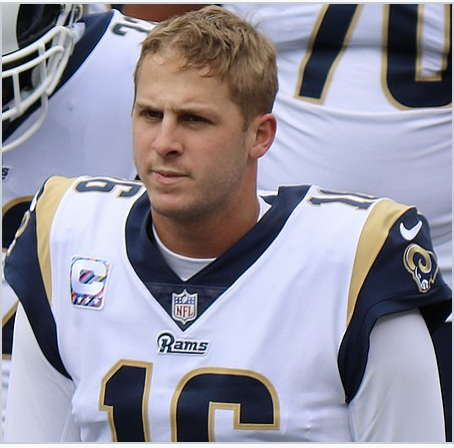
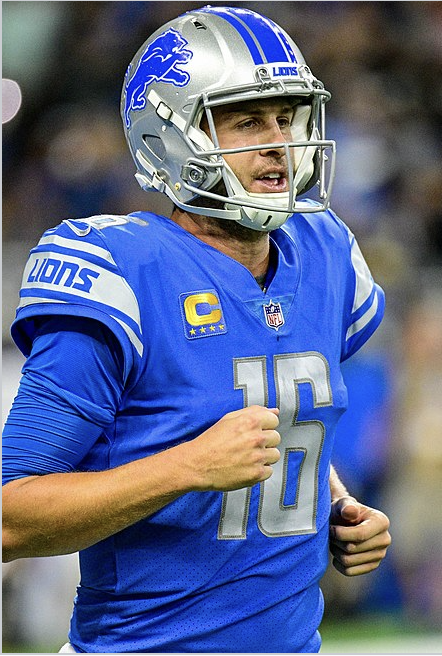
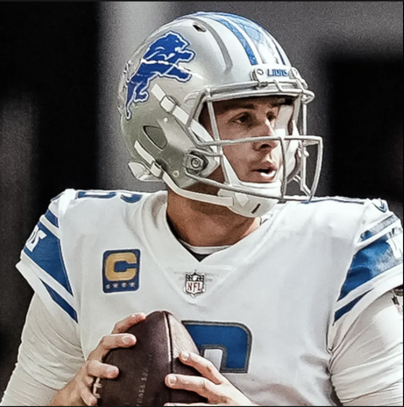
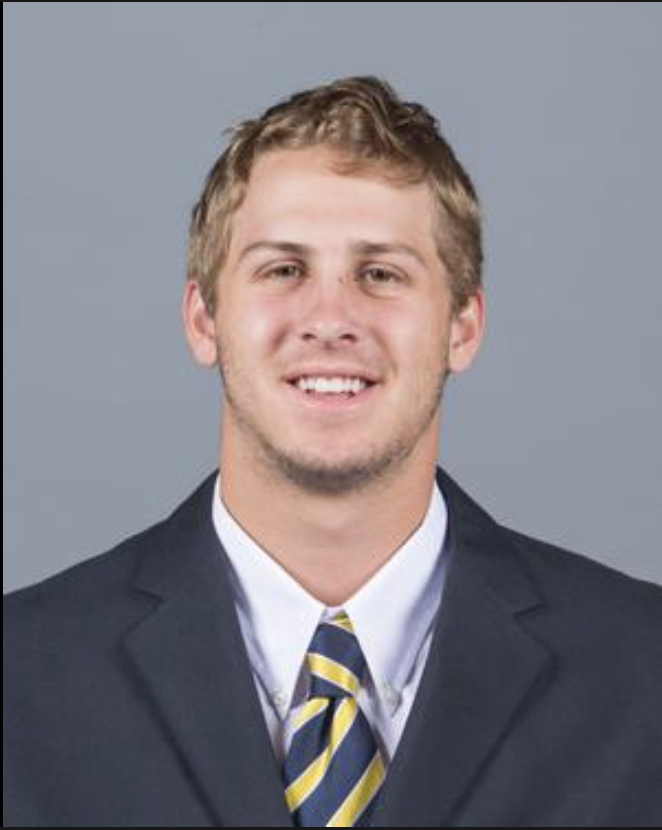

Who You Are
Jared Goff is an American professional football quarterback who currently plays for the Detroit Lions of the National
Football League (NFL). Born on October 14, 1994, in Novato, California, Goff showcased his football prowess early on at
Marin Catholic High School, leading to his recruitment by the University of California, Berkeley. During his college
stint from 2013 to 2015, he broke numerous school records and earned first-team All-Pac-12 honors,
which paved the way for his first overall selection by the Los Angeles Rams in the 2016 NFL Draft.
Goff's professional career saw a significant upswing in his second season, culminating in a Super Bowl LIII appearance
in 2018 with the Rams. Despite this achievement and two Pro Bowl selections, Goff was traded to the Detroit Lions in 2021,
where he now endeavors to contribute to the team's success as their starting quarterback.

Your History
Jared Goff was born on October 14, 1994, in Novato, California, with sports lineage as his father, Jerry Goff, was a former
Major League Baseball player. His football journey began at Marin Catholic High School, leading to a successful stint as
a quarterback at the University of California, Berkeley from 2013 to 2015. At Cal, he set 26 records and earned
first-team All-Pac-12 honors in his junior year, guiding the team to an Armed Forces Bowl victory, which set the stage
for his entry into professional football.
Selected first overall by the Los Angeles Rams in the 2016 NFL Draft, Goff navigated through a challenging rookie season
but emerged as a key player under head coach Sean McVay, leading the Rams to a Super Bowl LIII appearance in 2018.
His tenure with the Rams also included two Pro Bowl selections. However, in 2021, he was traded to the Detroit Lions,
where he assumed the role of starting quarterback, embarking on a new chapter of his career with hopes of contributing
to the Lions' success in the NFL.

What you have to offer
Jared Goff brings a blend of experience, skill, and resilience to any football team he's part of.
His journey through college and professional football has honed his abilities as a quarterback,
showcasing a solid arm, good field vision, and a knack for reading defenses. Goff's experience,
including a Super Bowl appearance and two Pro Bowl selections, reflects a level of competence and achievement
that can be a significant asset to a team. Moreover, his capacity to bounce back from challenges, as seen in his
career trajectory, demonstrates a resilience and a persistent drive to improve. His move to the Detroit Lions
presents an opportunity for both Goff and the Lions to build towards success, leveraging his skills, leadership,
and the lessons gleaned from his years in the league.

Important points about you
Jared Goff, born on October 14, 1994, in Novato, California, emerged as a promising football talent during his high
school and college years, the latter at the University of California, Berkeley where he set 26 school records.
Drafted as the first overall pick by the Los Angeles Rams in the 2016 NFL Draft, Goff's professional career
experienced a significant uptick in his second year, climaxing in a Super Bowl LIII appearance in 2018.
Despite the defeat, his tenure with the Rams showcased his capabilities, earning him two Pro Bowl selections.
However, a trade in 2021 ushered in a new chapter as Goff became the starting quarterback for the Detroit Lions,
embodying both a fresh start for him and hopes of rejuvenation for the Lions' franchise. Through these transitions,
Goff has displayed resilience, skill, and a potential to be a significant asset to his team.